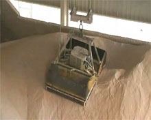
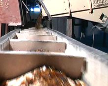
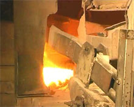
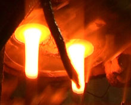
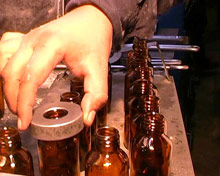
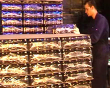

Manufacturing process
Examine Row Materials
A series of testing phases & scanning are done by conducting a series of tests for a random samples of deferent raw materials used in manufacturing such as sand, Dolomite, limestone and soda Ashe to make sure they conform to specifications..
Processing of raw materials

In This phase we begins in processing raw materials (sand, Dolomite,limestone, soda Ashe) in units designed for that and then transferred to the unit by tensioning where the confusion and mixing automatically from control Room this stage starting & Finishing without any human intervention..
Mixing

Add Cullet to the mix to and then transferred to the smelting furnaces..
Melting

The glass melted in especially furnace, in temperatures up to 1570 C
Forming

Where glass come up to the automated configuration where interrupt to spare with specific weights, which in turn transferred to bottles after a series of squeezing and blowing air sizes equal and production rates up to an average of 160 bottles per minute
Quality Control

This stage started by visual checks and automatically check to ensure the safety dimensions of bottles and it’s free from any manufacturing defects and then packaging operations begin on the next step.
Packaging

final products Are Packaging and transferring to our storage areas In preparation for transfer to our clients all over the world